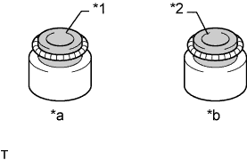
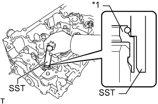
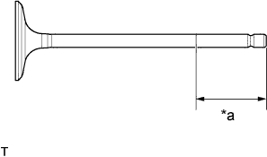
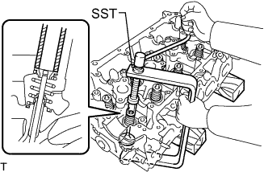
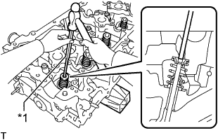
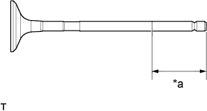
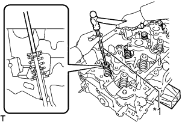

ГОЛОВКА БЛОКА ЦИЛИНДРОВ > ПОВТОРНАЯ СБОРКА |
| 1. УСТАНОВИТЕ РЕЗЬБОВУЮ ШПИЛЬКУ |
| *a | Верхняя сторона головки блока цилиндров | *b | Со стороны впуска |
| *c | Передняя сторона | *d | Со стороны выпуска |
С помощью торцевых ключей "TORX" E6, E7 и E8 вверните резьбовые шпильки.
| 2. УСТАНОВИТЕ РЕЗЬБОВУЮ ЗАГЛУШКУ № 1 С ГОЛОВКОЙ |
С помощью шестигранного гаечного ключа на 10 мм установите 3 новые прокладки и вверните резьбовые заглушки.
| 3. УСТАНОВИТЕ РЕЗЬБОВУЮ ЗАГЛУШКУ № 2 С ГОЛОВКОЙ |
С помощью шестигранной головки на 19 мм установите новую прокладку и резьбовую заглушку.
| 4. УСТАНОВИТЕ ЧАШКУ ПРУЖИНЫ КЛАПАНА |
Установите чашки 16 клапанных пружин на головку блока цилиндров.
| 5. УСТАНОВИТЕ САЛЬНИК ШТОКА КЛАПАНА |
|  |
Нанесите на новые сальники тонкий слой моторного масла.
| *1 | Серый |
| *2 | Черный |
| *a | Со стороны впуска |
| *b | Со стороны выпуска |
|  |
С помощью SST вставьте 16 сальников, чтобы установить их.
| *1 | Сальник штока клапана |
| 6. УСТАНОВИТЕ ВПУСКНОЙ КЛАПАН |
|  |
Нанесите достаточное количество моторного масла на кромку впускного клапана, как показано на рисунке.
| *a | 30 мм (1,18 дюйма) или более |
Установите клапан, пружину сжатия и держатель пружины на головку блока цилиндров.
|  |
С помощью SST и деревянных брусков сожмите пружину и установите 2 замка тарелки.
|  |
С помощью молотка с пластмассовым покрытием и бородка с тонким цилиндрическим концом диаметром 5 мм слегка осадите шток клапана, чтобы обеспечить надлежащую его посадку.
| *1 | Бородок с тонким цилиндрическим концом 5 мм |
| 7. УСТАНОВИТЕ ВЫПУСКНОЙ КЛАПАН |
|  |
Нанесите достаточное количество моторного масла на кромку впускного клапана, как показано на рисунке.
| *a | 30 мм (1,18 дюйма) или более |
Установите клапан, пружину сжатия и держатель пружины на головку блока цилиндров.
 |
С помощью SST и деревянных брусков сожмите пружину и установите 2 замка тарелки.
|  |
С помощью молотка с пластмассовым покрытием и бородка с тонким цилиндрическим концом диаметром 5 мм слегка осадите шток клапана, чтобы обеспечить надлежащую его посадку.
| *1 | Бородок с тонким цилиндрическим концом 5 мм |